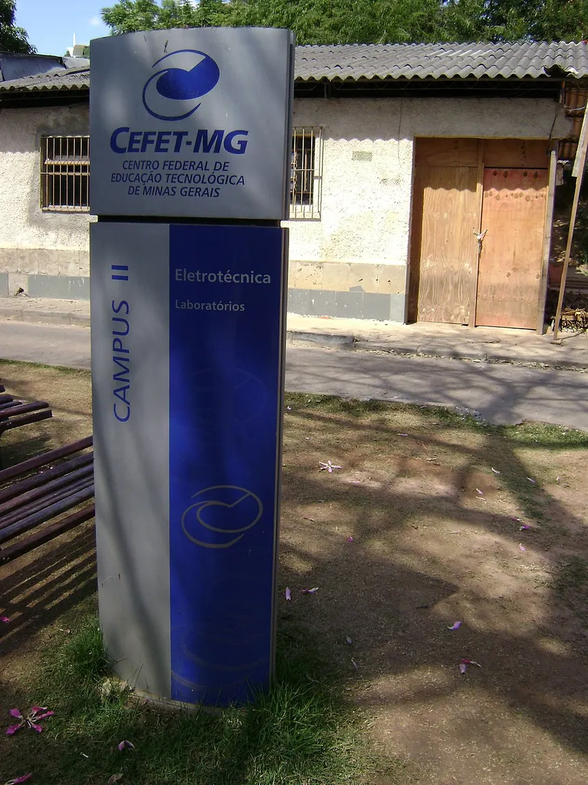

Bem vindo ao começo do seu futuro

Centro Federal de Educação Technológica de Minas Gerais
Como Tudo Começou
O CEFET-MG nem sempre teve a estrutura gigante que conhecemos hoje. Essa história de dedicação ao ensino começou a ser desenhada há mais de um século, mais precisamente em 1910, com a criação da antiga Escola de Aprendizes Artífices de Minas Gerais.
Nas primeiras décadas, o foco era a formação profissional básica, mas a instituição sempre acompanhou o ritmo do desenvolvimento industrial e tecnológico do país. Ao longo dos anos, ela se transformou em Escola Técnica Nacional, depois na famosa Escola Técnica Federal de Minas Gerais (ETFMG) e, finalmente, em 1978, conquistou o status de Centro Federal de Educação Tecnológica. Cada laboratório e cada corredor dos campi de Belo Horizonte carregam o legado de milhares de alunos e professores que passaram por aqui.
Hoje em Dia
Atualmente, o CEFET-MG se consolidou como uma das maiores e mais respeitadas instituições de ensino do Brasil, sendo amplamente recomendada por profissionais do mercado tanto pelas suas graduações quanto pelo ensino médio técnico.
Com nota máxima no MEC e diversos prêmios de inovação e tecnologia na bagagem, a instituição se destaca pela alta empregabilidade de seus formandos e pela forte produção científica. Entrar por essas portas hoje significa ter acesso a laboratórios de ponta, projetos de extensão incríveis e uma comunidade acadêmica vibrante. O CEFET-MG transforma dedicação em excelência — e agora, o próximo capítulo dessa trajetória de sucesso é você quem escreve!
A Entrada
Conquistar uma vaga no CEFET-MG é o objetivo de milhares de estudantes todos os anos, o que torna o seu processo seletivo um dos mais concorridos e respeitados de Minas Gerais. Para o ensino médio técnico, a entrada acontece por meio de um exame anual próprio, enquanto o ingresso na graduação é feito principalmente pelo SiSU, utilizando a nota do Enem.
Independentemente do caminho escolhido, vencer essa seleção exige muita dedicação e foco nos estudos. Por isso, cruzar as portas dos campi de Belo Horizonte como aluno oficial carrega um significado enorme: é a recompensa de um esforço genuíno e o início de uma trajetória que abre portas para o mundo inteiro. Sinta orgulho de estar aqui, pois você mereceu essa vaga. Seja muito bem-vindo!
Pontos Importantes

Diretoria
Por trás de toda a excelência acadêmica e da infraestrutura do CEFET-MG, existe uma equipe de gestão focada em garantir o pleno funcionamento da instituição e o bem-estar dos estudantes. A Diretoria Geral, juntamente com as diretorias de campus em Belo Horizonte, trabalha diariamente no planejamento estratégico, na manutenção dos laboratórios e no desenvolvimento de políticas de apoio ao aluno, como auxílios de permanência e bolsas de pesquisa.
Mais do que gerenciar documentos e recursos, a diretoria tem o papel de manter as portas abertas para ouvir as demandas da comunidade acadêmica, buscando sempre modernizar o ensino e aproximar a instituição do mercado de trabalho. Entender como a gestão funciona é fundamental para que você saiba a quem recorrer quando precisar de suporte institucional ou quiser propor novas ideias para o campus. A diretoria trabalha para que a sua única preocupação aqui dentro seja o seu aprendizado e o seu crescimento!
A atual diretora-geral do CEFET-MG é a professora Carla Simone Chamon, que assumiu o cargo em outubro de 2023 com mandato previsto até 2027. Ela é a primeira mulher a ocupar a direção geral da instituição em sua história de 113 anos.
"Diretora"
 Campus I
Campus I
 Campus II
Campus II